North-East India Places
- choose
- Gangtok
- Tawang
- Majuli
- North Sikkim
- Shillong
Gangtok Tourism -- "The Gateway to Sikkim"
Extremely alluring, pleasantly boisterous and wreathed in clouds - Gangtok, the capital city of the Sikkim can also give you a spectacular view of Mt. Kanchenjunga,
at a distant skyline. The pristine hill station nestled in mountains and clouds is also a base for a whole lot of trekkers to the Himalayan mountain ranges. The
mesmerising prismatic beauty and the beautiful winding hill roads are even more breathtaking if seen from a bird?s eye view in a cable car.
The name meaning hill-top, Gangtok can be safely said to be one of the most beautiful hill stations in the country. With everything in just the right amount from
a blend of cultural identities to urbanisation, Gangtok is a breathing and dynamic bit of paradise of the northeast. It has an amazing view of mount
Kanchenjunga, the third highest mountain peak in the world. Also like everything around it, Gangtok is abundant in natural beauty and has various natural
attractions such as the Tsomgo Lake, Ban Jhakri falls, Tashi viewpoint and more.
Thinks To Do
Nathulapass
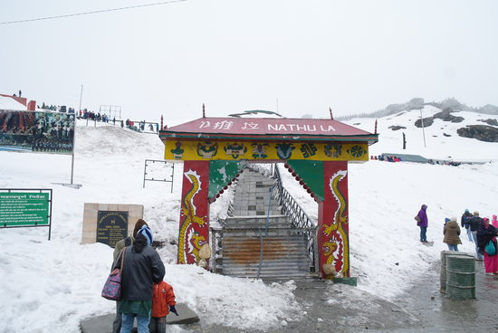
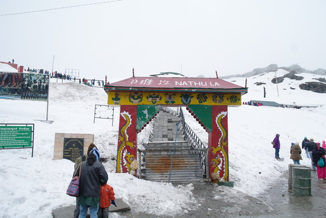
Ban Jhakri Falls

Ganesh Tok
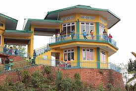
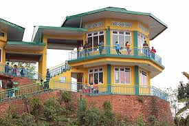
Tsongmo Lake
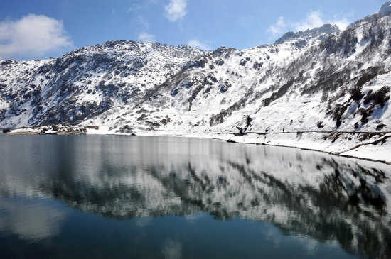
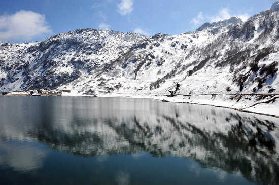
History
Much like the rest of Sikkim, not much is known about the history of the town. It remained a small boondock until after the construction of Enchey Monastery of Buddhist teachings in 1840 which made it a pilgrimage centre. It became a prominent town after the British invasion and then became the centre for trade between Tibet and British India. Most of the roads were built during this time, the infrastructure was improved, and the telegraph system was modied. Following India?s independence in 1947. Gangtok remained an independent monarchy, and a treaty was signed between King Chogyal and the then Prime Minister of India- Jawaharlal Nehru, to follow the monarch rule. The state and its capital did not follow the democratic rule. Finally in 1975, after decades of political uncertainties, struggles and riots, the monarchy was abrogated, and Sikkim became the twenty-second state of India with Gangtok as its ocial capital
Culture
Gangtok is inhabited by people from dierent ethnicities including Nepalese, Bhutias, and Lepchas. These various religious groups and communities keep the traditional culture and identity of the city alive. Buddhism and Hinduism are the two majorly followed religion. Gangtok has several monasteries and religious institutions. Dierent festivals celebrated in Gangtok are a mark of the rich cultural heritage. Other than Diwali, Holi and Christmas; Saga Dawa is a famous Buddhist festival. There is also Phang Lhabsol, celebrated in the honour of Mount Kanchenjunga among other religious festivals. Annual Gangtok Food and Cultural Festival is also organised by the government every year. Music is a much- loved form of entertainment in Gangtok. The Sikkimese cuisine is served in local restaurants which include momos, thukpas, noodles etc.
Much like the rest of Sikkim, not much is known about the history of the town. It remained a small boondock until after the construction of Enchey Monastery of Buddhist teachings in 1840 which made it a pilgrimage centre. It became a prominent town after the British invasion and then became the centre for trade between Tibet and British India. Most of the roads were built during this time, the infrastructure was improved, and the telegraph system was modied. Following India?s independence in 1947. Gangtok remained an independent monarchy, and a treaty was signed between King Chogyal and the then Prime Minister of India- Jawaharlal Nehru, to follow the monarch rule. The state and its capital did not follow the democratic rule. Finally in 1975, after decades of political uncertainties, struggles and riots, the monarchy was abrogated, and Sikkim became the twenty-second state of India with Gangtok as its ocial capital
Culture
Gangtok is inhabited by people from dierent ethnicities including Nepalese, Bhutias, and Lepchas. These various religious groups and communities keep the traditional culture and identity of the city alive. Buddhism and Hinduism are the two majorly followed religion. Gangtok has several monasteries and religious institutions. Dierent festivals celebrated in Gangtok are a mark of the rich cultural heritage. Other than Diwali, Holi and Christmas; Saga Dawa is a famous Buddhist festival. There is also Phang Lhabsol, celebrated in the honour of Mount Kanchenjunga among other religious festivals. Annual Gangtok Food and Cultural Festival is also organised by the government every year. Music is a much- loved form of entertainment in Gangtok. The Sikkimese cuisine is served in local restaurants which include momos, thukpas, noodles etc.
Gangtok Tourism -- "The Gateway to Sikkim"
Extremely alluring, pleasantly boisterous and wreathed in clouds - Gangtok, the capital city of the Sikkim can also give you a spectacular view of Mt. Kanchenjunga,
at a distant skyline. The pristine hill station nestled in mountains and clouds is also a base for a whole lot of trekkers to the Himalayan mountain ranges. The
mesmerising prismatic beauty and the beautiful winding hill roads are even more breathtaking if seen from a bird?s eye view in a cable car.
The name meaning hill-top, Gangtok can be safely said to be one of the most beautiful hill stations in the country. With everything in just the right amount from
a blend of cultural identities to urbanisation, Gangtok is a breathing and dynamic bit of paradise of the northeast. It has an amazing view of mount
Kanchenjunga, the third highest mountain peak in the world. Also like everything around it, Gangtok is abundant in natural beauty and has various natural
attractions such as the Tsomgo Lake, Ban Jhakri falls, Tashi viewpoint and more.
Thinks To Do
Nathulapass
Ban Jhakri Falls
Ganesh Tok
Tsongmo Lake
History
Much like the rest of Sikkim, not much is known about the history of the town. It remained a small boondock until after the construction of Enchey Monastery of Buddhist teachings in 1840 which made it a pilgrimage centre. It became a prominent town after the British invasion and then became the centre for trade between Tibet and British India. Most of the roads were built during this time, the infrastructure was improved, and the telegraph system was modied. Following India?s independence in 1947. Gangtok remained an independent monarchy, and a treaty was signed between King Chogyal and the then Prime Minister of India- Jawaharlal Nehru, to follow the monarch rule. The state and its capital did not follow the democratic rule. Finally in 1975, after decades of political uncertainties, struggles and riots, the monarchy was abrogated, and Sikkim became the twenty-second state of India with Gangtok as its ocial capital
Culture
Gangtok is inhabited by people from dierent ethnicities including Nepalese, Bhutias, and Lepchas. These various religious groups and communities keep the traditional culture and identity of the city alive. Buddhism and Hinduism are the two majorly followed religion. Gangtok has several monasteries and religious institutions. Dierent festivals celebrated in Gangtok are a mark of the rich cultural heritage. Other than Diwali, Holi and Christmas; Saga Dawa is a famous Buddhist festival. There is also Phang Lhabsol, celebrated in the honour of Mount Kanchenjunga among other religious festivals. Annual Gangtok Food and Cultural Festival is also organised by the government every year. Music is a much- loved form of entertainment in Gangtok. The Sikkimese cuisine is served in local restaurants which include momos, thukpas, noodles etc.
Much like the rest of Sikkim, not much is known about the history of the town. It remained a small boondock until after the construction of Enchey Monastery of Buddhist teachings in 1840 which made it a pilgrimage centre. It became a prominent town after the British invasion and then became the centre for trade between Tibet and British India. Most of the roads were built during this time, the infrastructure was improved, and the telegraph system was modied. Following India?s independence in 1947. Gangtok remained an independent monarchy, and a treaty was signed between King Chogyal and the then Prime Minister of India- Jawaharlal Nehru, to follow the monarch rule. The state and its capital did not follow the democratic rule. Finally in 1975, after decades of political uncertainties, struggles and riots, the monarchy was abrogated, and Sikkim became the twenty-second state of India with Gangtok as its ocial capital
Culture
Gangtok is inhabited by people from dierent ethnicities including Nepalese, Bhutias, and Lepchas. These various religious groups and communities keep the traditional culture and identity of the city alive. Buddhism and Hinduism are the two majorly followed religion. Gangtok has several monasteries and religious institutions. Dierent festivals celebrated in Gangtok are a mark of the rich cultural heritage. Other than Diwali, Holi and Christmas; Saga Dawa is a famous Buddhist festival. There is also Phang Lhabsol, celebrated in the honour of Mount Kanchenjunga among other religious festivals. Annual Gangtok Food and Cultural Festival is also organised by the government every year. Music is a much- loved form of entertainment in Gangtok. The Sikkimese cuisine is served in local restaurants which include momos, thukpas, noodles etc.
Tawang Tourism -- ""The birth place of Dalai Lama"
Located at a height of about 3048m, is known for many important and beautiful monasteries and is famous as the birth place of Dalai Lama.
The beautiful town of Tawang, also pronounced as Dawang has many sceneries to make your trip a picturesque one. However, what begins to dene the area is
its signicance for Buddhist monks. Tawang is the place to go for monasteries, with the Tawang Monastery being the most popular one and extremely sacred for the Buddhists. Tawang is a place which will atter you with its natural
beauty wrapped in the scent of spirituality. The beautiful orchid sanctuary and the Tipi Orchid Sanctuary is also an ideal place for your list of places to visit.
Along with this one can have their taste buds to have an experience of Tawang by indulging into the area's unique
cuisine.
Thinks To Do
Tawang Monastery
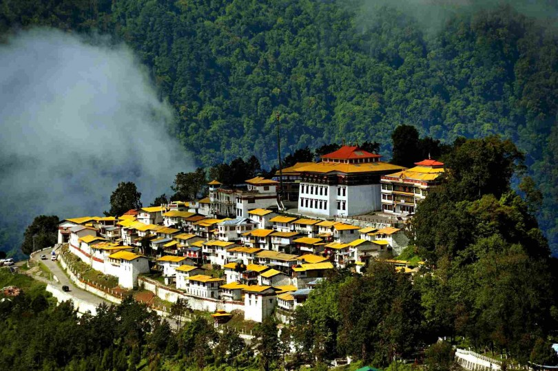
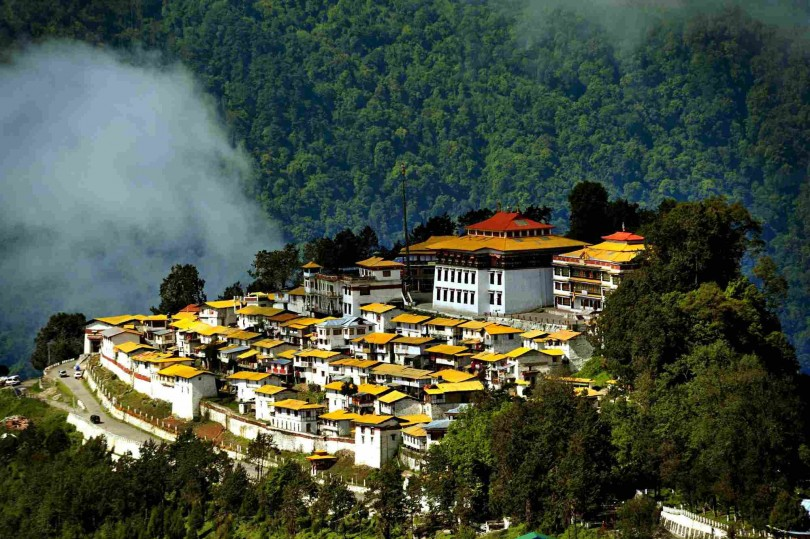
Sela Pass and Lake

Bap Teng Kang

Gorichen Peak

A city of peace and pride
Situated at an elevation of 10,000 feet, Tawang is a Buddhist mountain town in the western part of Arunachal Pradesh. Connected to the rest of India via the Sela Pass, Tawang, popularly known as the 'land of Monpas', is a historically important town, forming an important part of the Silk Route and also a reminder of the sacrices of the men guarding our nation in the borders. Protecting stories of valour and patriotism Tawang is famous for the largest Buddhist Monastery in India which also gives the town its name. The picturesque and seldom traversed town also holds several natural marvels like the Madhuri Lake which enchants each and every tourist visiting the place. The snow covered peaks in Tawang has also gained popularity as a perfect skiing spot over the years.
Restaurants and Local Food in Tawang
The cuisine here is a blend of traditional North-Eastern food and a colourful and spicy inuence of Monpas, making it standout a little. Also, the richest, most colorful and delicious from of Tawang's food is found on its street, giving birth to a vibrant street food culture. One must try the mouth watering Paratha-Sabzi, Zan, local versions of a pancake as well as a rich Biryani called Gyapa Khazi. Other than these, don't miss the staple Momos and Thukpa.
Situated at an elevation of 10,000 feet, Tawang is a Buddhist mountain town in the western part of Arunachal Pradesh. Connected to the rest of India via the Sela Pass, Tawang, popularly known as the 'land of Monpas', is a historically important town, forming an important part of the Silk Route and also a reminder of the sacrices of the men guarding our nation in the borders. Protecting stories of valour and patriotism Tawang is famous for the largest Buddhist Monastery in India which also gives the town its name. The picturesque and seldom traversed town also holds several natural marvels like the Madhuri Lake which enchants each and every tourist visiting the place. The snow covered peaks in Tawang has also gained popularity as a perfect skiing spot over the years.
Restaurants and Local Food in Tawang
The cuisine here is a blend of traditional North-Eastern food and a colourful and spicy inuence of Monpas, making it standout a little. Also, the richest, most colorful and delicious from of Tawang's food is found on its street, giving birth to a vibrant street food culture. One must try the mouth watering Paratha-Sabzi, Zan, local versions of a pancake as well as a rich Biryani called Gyapa Khazi. Other than these, don't miss the staple Momos and Thukpa.
Majuli Tourism -- "World's Largest Fresh Water Island"
Majuli is a lush green environment-friendly, pristine and pollution free fresh water island in the river Brahmaputra, just 20 km from the Jorhat city.
With a total area of 1250 sq. km, Majuli is the world's largest river island and it attracts tourists from all over the world. Among one of the most surreal places in
India, Majuli is also a strong contender for a place in UNESCO's World Heritage Sites. Mostly inhabited by Tribals, the culture of Majuli is unique and quite
interesting and is one of the key reasons why people love this place so much. It is also called the cultural capital of Assam. The festivals celebrated here are all
joyous and vibrant. The main festival in the town of Majuli is called Raas and witnessing it is an interesting spectacle."
Thinks To Do
Kamalabari Satra
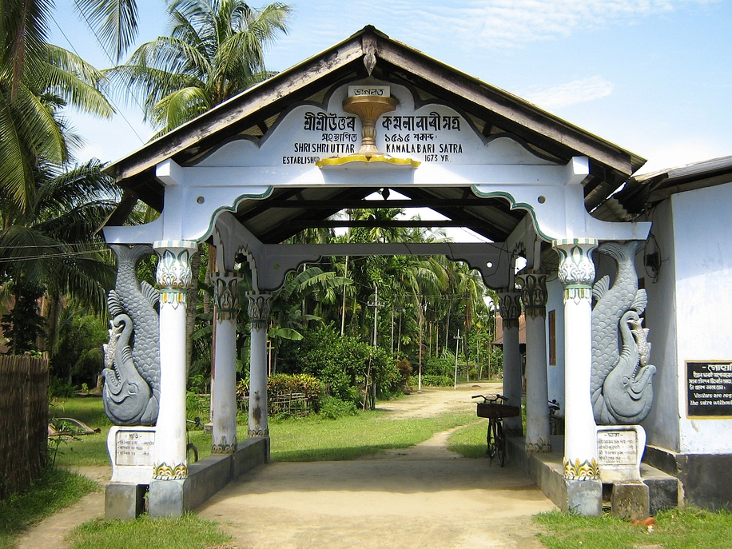
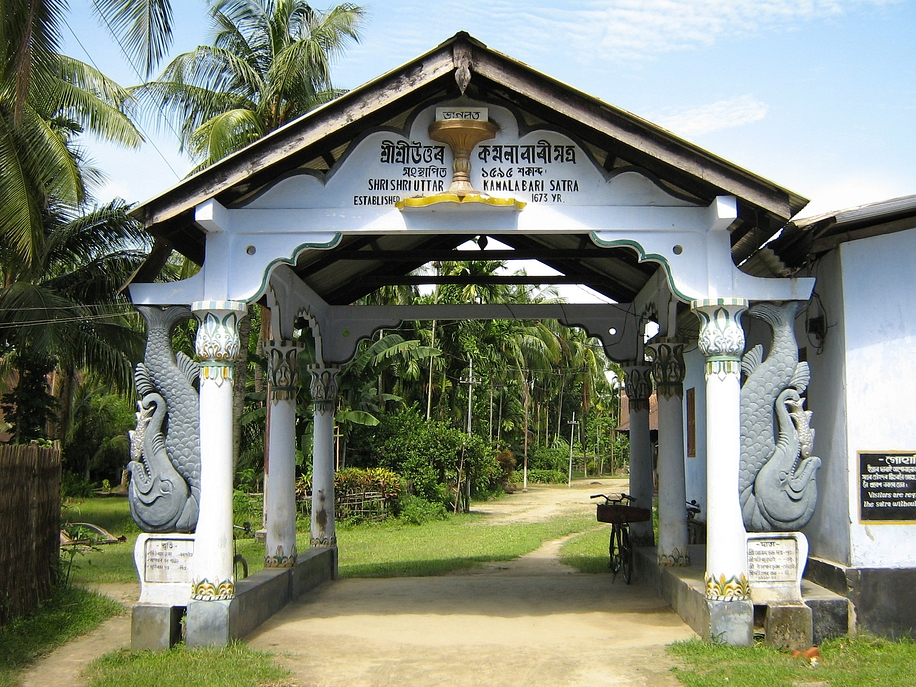
Garmur

Tengapania

Auniati Satra

Assamese Architectural in Majuli
Dierent parts of India show us glimpses of the various architectural styles. Majuli's buildings reected the architectural style of the bygone era when the kings and queens used to rule. Many of the monuments are preserved due to their sheer signicance regarding history and architecture. The Dakhinpat Satra in Jorhat District is an excellent example of the Assamese architectural style. The gates are decorated with pictures of owers and animals. Various such paintings embellish the insides of Dakhinpat Satra. Nearby monuments like Tengapania are also famous for their Ahom architectural style which is popular in Assam.
Restaurants and Local Food in Majuli
Majuli will not oer anything exquisite or unique but simple, ordinary and typical food with handful of popular items o the the local state menu can be found here. The options can be somewhat limited and you might want to carry some food from home for a trip to Majuli. The popular items that you might nd here include Khar, Laksa, Tenga and a few varieties of rice.
Dierent parts of India show us glimpses of the various architectural styles. Majuli's buildings reected the architectural style of the bygone era when the kings and queens used to rule. Many of the monuments are preserved due to their sheer signicance regarding history and architecture. The Dakhinpat Satra in Jorhat District is an excellent example of the Assamese architectural style. The gates are decorated with pictures of owers and animals. Various such paintings embellish the insides of Dakhinpat Satra. Nearby monuments like Tengapania are also famous for their Ahom architectural style which is popular in Assam.
Restaurants and Local Food in Majuli
Majuli will not oer anything exquisite or unique but simple, ordinary and typical food with handful of popular items o the the local state menu can be found here. The options can be somewhat limited and you might want to carry some food from home for a trip to Majuli. The popular items that you might nd here include Khar, Laksa, Tenga and a few varieties of rice.
North Sikkim Tourism
One of the most uninhabited areas of the country, yet extremely beautiful and charming, North Sikkim (https://www.holidify.com/state/sikkim/) shares its
boundary with China and Nepal.
Mangan is the headquarters of the North Sikkim district. It is one of the most
mystically beautiful though unexplored areas due to the harsh conditions found here. Located at an altitude of 956 meters the town of Mangan serves as a
base for trekking and hiking trips in the mountains and forests. North Sikkim is famous for the Gurudongmar Lake which is one of the highest lakes of India. It also has religious importance. Apart from lakes, there are some
important monasteries in this area too.
Thinks To Do
Gurudongmar Lake
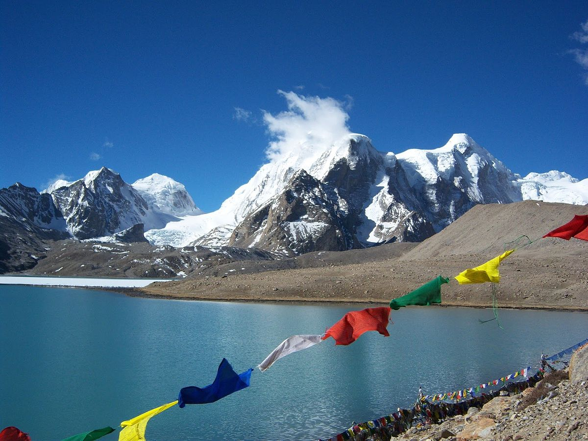
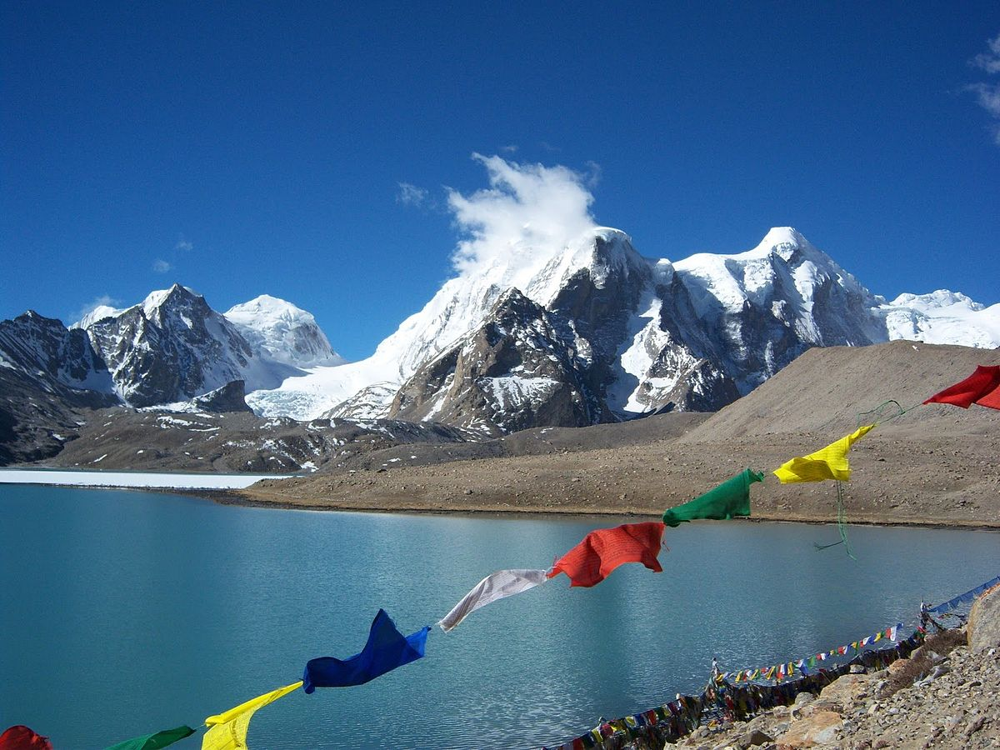
Thangu Valley

Yumthang
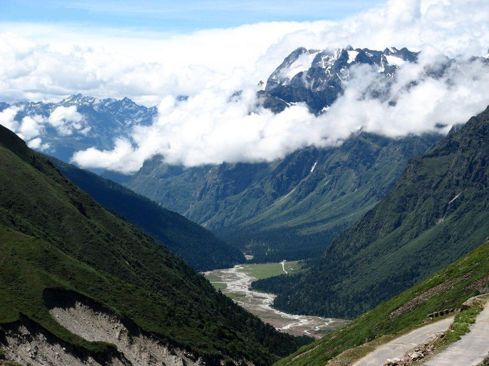
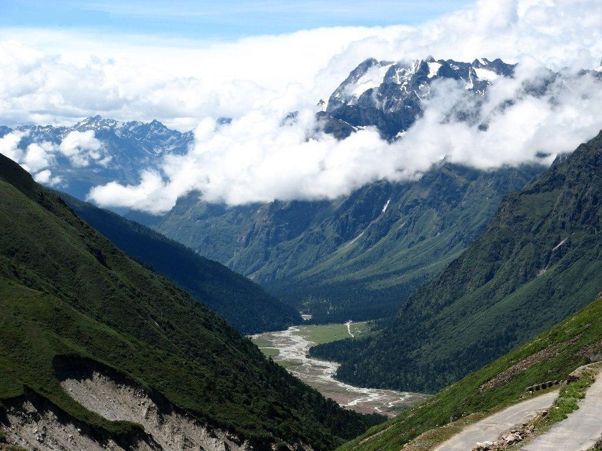
Lachen

Heaven on Earth
North-Sikkim is a district located in the state of Sikkim. Out of the four districts of Sikkim, North-Sikkim is largest and the least populated. It is also the district headquarter of Mangan. North-Sikkim oers an amazing view of scenic beauty with its landscape full of majestic mountains, dense forests, several delightful waterfalls and of course the weather. The peaks of the Himalayas can be seen from here, especially the peak of the Kanchenjunga, the highest peak of the Himalayas. North-Sikkim is generally restricted to tourists and travellers due to its location on the India - China border. You would need permits in order to vacation there. Beautiful wildowers and owering trees that habitat the area surrounding the streams and rivers only add to its alluring charm. The Khangchendzonga National Park is one of the major attractions in North-Sikkim. The Red Panda is a native of North-Sikkim. It is the State Animal of Sikkim. The Shingba Wildlife Sanctuary is also based here. North-Sikkim is an unique destination and promises to give you a very dierent experience than any other vacation. You can either communicate in English or Hindi as the travel guides and drivers are well versed in both these languages.
Restaurants and Local Food in North Sikkim
The cuisine of the area remains pretty constant in constant across the state in terms of ingredients, styles and popular items. The towns are dierentiated very slightly in terms of food with a few delicacies in or out of the menu. Momos and a variety of Thukpa remain staple while you can try a number of fermented foods here such as Gundruk and Sinki, Chhurpi soup, Tama curry and Masauyra Curry. tease your taste buds a little with the pickles available here such as Shimi ko Achar, Silam ko Achar, Sidra ko Achar and more. Other preparations include Khalo Dal, Saelroti, Sishnu Soup, Chang and more.
North-Sikkim is a district located in the state of Sikkim. Out of the four districts of Sikkim, North-Sikkim is largest and the least populated. It is also the district headquarter of Mangan. North-Sikkim oers an amazing view of scenic beauty with its landscape full of majestic mountains, dense forests, several delightful waterfalls and of course the weather. The peaks of the Himalayas can be seen from here, especially the peak of the Kanchenjunga, the highest peak of the Himalayas. North-Sikkim is generally restricted to tourists and travellers due to its location on the India - China border. You would need permits in order to vacation there. Beautiful wildowers and owering trees that habitat the area surrounding the streams and rivers only add to its alluring charm. The Khangchendzonga National Park is one of the major attractions in North-Sikkim. The Red Panda is a native of North-Sikkim. It is the State Animal of Sikkim. The Shingba Wildlife Sanctuary is also based here. North-Sikkim is an unique destination and promises to give you a very dierent experience than any other vacation. You can either communicate in English or Hindi as the travel guides and drivers are well versed in both these languages.
Restaurants and Local Food in North Sikkim
The cuisine of the area remains pretty constant in constant across the state in terms of ingredients, styles and popular items. The towns are dierentiated very slightly in terms of food with a few delicacies in or out of the menu. Momos and a variety of Thukpa remain staple while you can try a number of fermented foods here such as Gundruk and Sinki, Chhurpi soup, Tama curry and Masauyra Curry. tease your taste buds a little with the pickles available here such as Shimi ko Achar, Silam ko Achar, Sidra ko Achar and more. Other preparations include Khalo Dal, Saelroti, Sishnu Soup, Chang and more.
Shiliong Tourism -- "Scotland of the East"
A beautiful city encircled by pine trees, Shillong is the capital of Meghalaya. It derives its name from Lei Shyllong, an idol worshipped at the Shillong Peak. Standing
as tall as 1496 meters, Shillong provides a relief from the heat across the country. This hill station is known for its picturesque sights and traditions. The soothing
climate makes Shillong suitable to visit in all seasons. The light drizzles and the cooling gentle wind adds to the joy of visiting this hill station. This place is also
known as the ?Scotland of the East?. One can nd descendants of the Khyrim, Mylliem, Maharam, Mallaisohmat, Bhowal and Langrim tribes.
Shillong, the capital of Meghalaya, is the home to numerous waterfalls. The exciting mountain peaks, crystal clear lakes, breathtakingly beautiful golf courses,
museums and the zoo are the key reasons why people visit Shillong. Apart from the natural beauty, Shillong also acts as the gateway to Meghalaya, the state
famous for heavy rainfalls, caving, tallest waterfalls, beautiful landscapes and amazing people and culture. Shillong in particular has been in limelight for its
jovial people and their culture. Interestingly, Shillong has a very westernised culture and it has a very young feel to it. Shillong is also famous as the music
capital of India, as many prominent musicians have hailed from this place. Many music events keep happening throughout the year, making it a very lively
place.
Thinks To Do
Mawlynnong
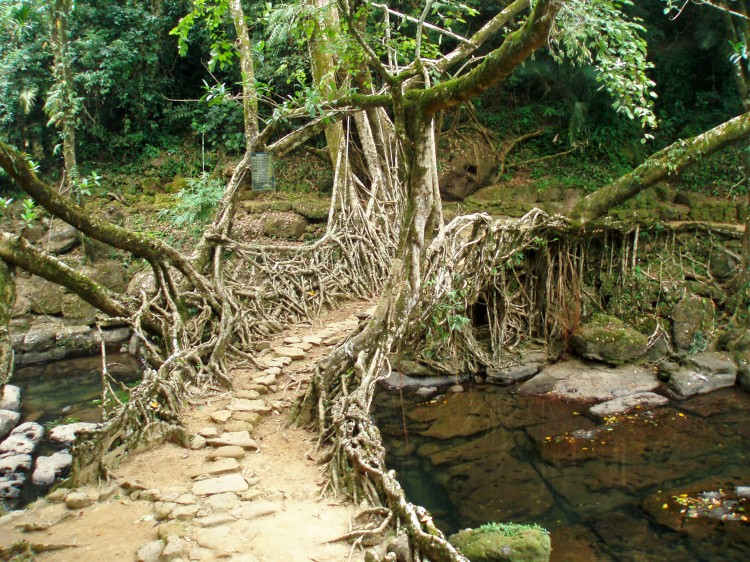
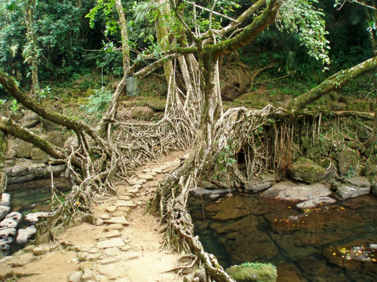
Umiam lake

Shillong Peak

Mawsynram
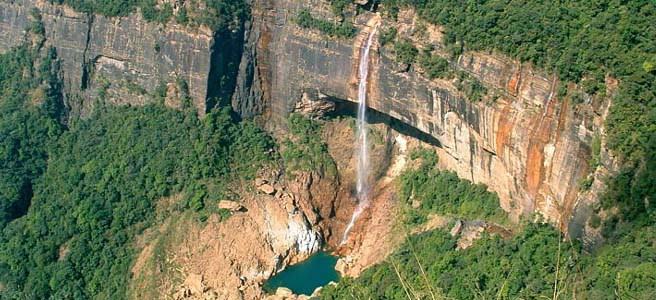
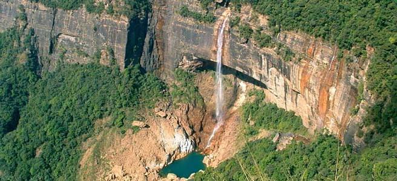
Nature's Paradise
Famed as "Scotland of the East", Shillong brings to you a true nature?s paradise ourished with rich culture. Shillong is wrapped with hills, greenery and sheer serenity. The waterfalls and lakes of Shillong are the perfect spots to nd peace of mind and add a lovely contrast to the panorama that comprises green in majority
Nightlife in Shillong
The nightlife in Shillong is quite unique in its own sense. It is not very happening or electrifying like what nightlife is usually assumed to be. In Shillong, nightlife is slow and steady. People usually like to relax and have a drink or two at some of the bars Shillong has. However, the city doesn?t lack nightlife completely. One can nd, Shillong has many pubs, bars and discos. The nightlife in Shillong has slowly shifted from sedate to a happening one. Some of the best places to experience the nightlife in Shillong are Cloud 9, Café Shillong, Tango and Platinum.
Famed as "Scotland of the East", Shillong brings to you a true nature?s paradise ourished with rich culture. Shillong is wrapped with hills, greenery and sheer serenity. The waterfalls and lakes of Shillong are the perfect spots to nd peace of mind and add a lovely contrast to the panorama that comprises green in majority
Nightlife in Shillong
The nightlife in Shillong is quite unique in its own sense. It is not very happening or electrifying like what nightlife is usually assumed to be. In Shillong, nightlife is slow and steady. People usually like to relax and have a drink or two at some of the bars Shillong has. However, the city doesn?t lack nightlife completely. One can nd, Shillong has many pubs, bars and discos. The nightlife in Shillong has slowly shifted from sedate to a happening one. Some of the best places to experience the nightlife in Shillong are Cloud 9, Café Shillong, Tango and Platinum.